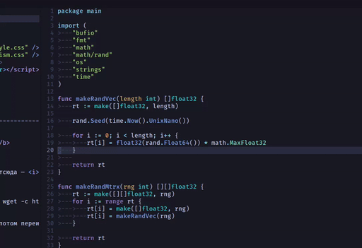
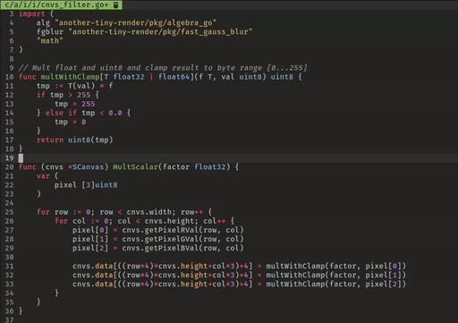
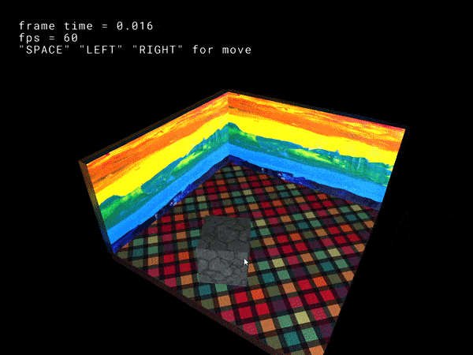
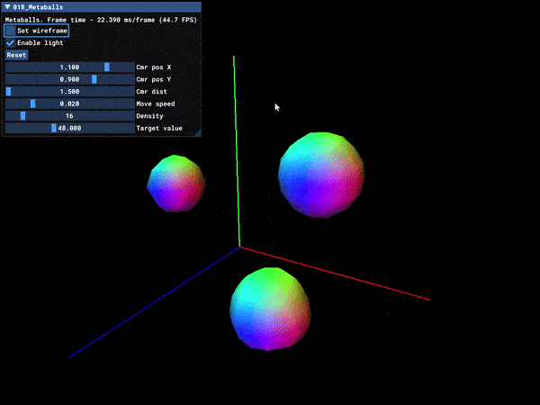

Готовим vim (nvim) для golang
Более подробное погружение в настройку vim (neovim) для работы в
качестве IDE для golang. Рассмотрим несколько конкретных схем
подготовки, направленных на минимальную работу по ручной настройке и
использующих максимально up to date плагины.

Настраиваем vim и neovim.
Пробуем сделать из vim и neovim некое подобие IDE. Выясняем насколько
правдивы рассказы людей в интернете про возможности этих редакторов в
качестве IDE или замены для VSCode и ему подобных.

Начало работы с Bullet Physics Engine.
Введение в работу с Bullet Physics. Скачиваем, собираем под Windows с
помощью CMake и MinGW-64, собираем тестовую сцену и катаем кубики.

Marching cubes
Реализация алгоритма marching cubes (так-же реализован marching
tetrahedra) на примере metaballs. Оригинальный код принадлежит
Paul Bourke.

Что лучше - O(n) или O(logn)?
Интуитивно кажется, что понижая степень полинома можно добиться всё
лучшей ассимптотики и "приблизится" к константе. Но, оказывается, есть
класс функций, значения которых растут медленее любого полинома про
увеличении аргумента. Утверждение - O(lnx) < O(x) при \(x \to
\infty\) для любого полинома и логарифма. Г. Г. Харди "Курс чистой
математики".